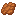

DRAGONレッドドラゴン
大空を旋回し、炎と衝撃波、岩盤の欠片を武器にする赤い竜。周囲から最大15個のブロックを収集し、盾として纏ったり、破壊的な一斉投擲を放ったりする。
攻撃と攻略の詳細
低空突進、ブレス、火炎弾幕、衝撃波に警戒。ブロックの個別投擲は攻撃で跳ね返せる。まとまった一斉投擲は反射できないため回避すること。纏ったTNTは火の付いた投擲物によって爆発する場合がある。
深淵の博物誌 COMPENDIUM OF THE ABYSS
岩盤の下で、歴史は消えていなかった。
神々に捨てられた地形、忘れ去られた住人、二度と現れないはずの遺物。ポータルを通らず、通常世界の底からそのすべてに触れる。


一般的な冒険者の認識では、この宇宙は3つの階層で成り立っている。天上のエンド、我々が暮らすオーバーワールド、そして最下層の灼熱地獄ネザーだ。
しかし、もしオーバーワールドの底の岩盤を突き破り、ポータルを使わず生身のまま降りていけたら？ そこにあるのは虚無ではない。ファントムが巣くい、捨てられた地形が堆積した異常な世界だ。
神々が世界を創り変える過程で歴史の表舞台から消し去ったはずの風景が、地下で折り重なっている。常識的な気候区分も、時代の境界も、ここでは意味を失う。
奈落は別ディメンションではありません。通常世界のY=-256から下に連続し、さらに深く進むと同じディメンションの次の深度ページへ移動します。
見慣れた平原を抜けた次の瞬間、旧世紀の森、奇妙な断崖、浮遊島、そしてネザーの赤い地形が現れる。歴史の異なる33種類の地形が、ひとつの深淵を形成している。
全員が地上に戻ると地下地形の世代が切り替わり、古い自然地形は段階的に再生成されます。プレイヤーの建築、収納物、持ち込んだMobなどは保護されます。保護対象があるチャンクは再生成されない場合があります。
昔のクリーパーは死んでから爆発する。スケルトンは最後に矢をばらまき、人間は何事もなかったように跳ね回る。現代の図鑑では読めない生態を記録する。
一致するMobが見つかりませんでした。

DRAGON大空を旋回し、炎と衝撃波、岩盤の欠片を武器にする赤い竜。周囲から最大15個のブロックを収集し、盾として纏ったり、破壊的な一斉投擲を放ったりする。
低空突進、ブレス、火炎弾幕、衝撃波に警戒。ブロックの個別投擲は攻撃で跳ね返せる。まとまった一斉投擲は反射できないため回避すること。纏ったTNTは火の付いた投擲物によって爆発する場合がある。
地下に長く留まった探索者の前に現れる巨大な亡霊。暗視なしでは姿を捉えにくく、普通の攻撃が通用しない。倒しても分裂し、集まり直して再生する。
アンデッド特効、燃える矢、光の矢などが有効。目付近の命中でスタンする。HPを削ると多数のハートに分裂するため、再集合前にハートを減らし、最大HPを5まで下げて最終決着を狙う。
奥底の宝箱に眠る遺物こそ、命知らずの探索者にとって最大の報酬。装備と素材を金床で組み合わせれば、通常とは異なる固有エンチャントを付けられる。
左に武器・防具、右に素材1個。通常の特殊強化コストは経験値3レベル。ルビーの能力は、付与後の金床使用からコストを半分にする。
+損傷した武器・防具と輝く黒曜石1個を作業台で組み合わせると、名前やエンチャントを失わずに耐久値が完全回復します。金床ではありません。
世界の残骸には、便利なものも、ただ奇妙なものもある。持ち帰りたくなる品ほど、地下深くに眠っている。
奈落に長居すると悪夢が目を覚ます。持ち帰れるものを見極め、戻る判断を忘れないこと。戻ってきた時、地下にはもう昨日と同じ地形は残っていないかもしれない。
記録の先頭へ戻る↑これはゲーム内世界観を含む非公式の攻略ガイドです。MODはMojang / Microsoftとは無関係です。実装値は更新で変更される場合があります。
敵のなかから仲間を見つける世界と、過去の世界を掘り起こす冒険。もう一つの公式図鑑にも訪れてみよう。